Project 5: Fun with Diffusion Models!
Part A: The Power of Diffusion Models!
This part explores the capabilities of diffusion models for image generation and image editing.
Part 0: Exploring Prompt Embeddings
In this part, I experimented with generating images using different text prompts to see how the diffusion model interprets various descriptions.
Here are some of the prompts I gave the model:
- a photo of Roger Federer hitting a forehand on a grass tennis court
- Berkeley students taking a difficult exam
- an oil painting of a tennis court
I'm using the DeepFloyd text-to-image model image generation. Note that I'm using the random seed 180 for all image generations to ensure reproducibility of results. Here are the generated images for each prompt above, using 2 different num_inference_steps values (20 and 30):

num_inference_steps = 20

num_inference_steps = 30

num_inference_steps = 20

num_inference_steps = 30

num_inference_steps = 20

num_inference_steps = 30
These images are not perfect, but they do show that the diffusion model is able to capture some aspects of the prompts given. It seems that a higher number of inference steps leads to slightly more detailed images, but the model takes longer to run.
Part 1: Sampling Loops
Part 1.1: Implementing the Forward Process
I implemented the forward(im, t) function that takes an image and a time step t and adds noise to the image according to the diffusion model's cumulative alpha value at time t.
The forward process is defined by:
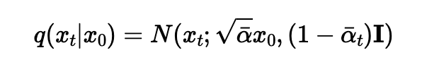
which is equivalent to computing
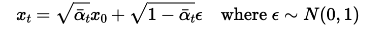
Here are some of the results of adding noise to the Berkeley Campanile image at different time steps:

Berkeley Campanile

Noisy Campanile (t=250)

Noisy Campanile (t=500

Noisy Campanile (t=750)
Here's a code snippet I used to implement the forward process:
im_noisy = torch.sqrt(alpha_t) * im + torch.sqrt(1 - alpha_t) * epsilon
Part 1.2: Classical Denoising
One classical denoising technique involves removing noise from an image by applying a Gaussian filter. Getting good results using this method is quite difficult.
For each of the 3 noisy images generated in Part 1.1, I applied Gaussian filtering with different sigma values to see how well it could denoise the images.
Here are the best results, shown side by side with the original noisy images:
Noisy Campanile (t=250)

t=250, k=5.0, sigma=1.0
Noisy Campanile (t=500)

t=500, k=5.0, sigma=1.0
Noisy Campanile (t=750)

t=750, k=5.0, sigma=1.0
Obviously, these results are not very good. We improve on this in the next section using diffusion models!
Part 1.3: One-Step Denoising
Now instead, let's use a pre-trained diffusion model to denoise the images in one step. We'll use the DeepFloyd model with the text prompt "a high quality photo".
I estimated the noise in the noisy image at time step t using the diffusion model, and then removed the estimated noise from the noisy image to get the estimated original image.
I ran this model on each of the noisy images from the previous section. Here are the results, as well as their comparisons to the original and noisy images:
Original Image
Noisy Image (t=250)

Denoised Image (t=250)
Original Image
Noisy Image (t=500)

Denoised Image (t=500)
Original Image
Noisy Image (t=750)

Denoised Image (t=750)
Part 1.4: Iterative Denoising
I constructed strided_timesteps, which is a list of time steps that decrease from 990 to 0 in increments of 30.
Then, I implemented the iterative_denoise function that takes a noisy image and iteratively denoises it using the diffusion model at each time step in strided_timesteps.
In the iterative_denoise function, we start with the noisy campanile image at a timestep and progressively denoise it using the model's predictions at each timestep.
To actually do this, on the ith denoising step we want to get t' = strided_timesteps[i+1] and t = strided_timesteps[i] (from more noisy to less noisy). We can implement this using the formula:

Where
- x_t is your current noisy image at time t
- x_t' is the less noisy image at time t'
- The alpha values at each time step are predetermined constants from the diffusion model
- v_sigma is random noise
Here are the results at every 5th loop in the denoising process:

t = 690

t = 540

t = 390

t = 240

t = 90
The final predicted image is much better compared to the one-step denoising as well as the classical denoising from the previous parts.

Predicted Image

One-Step Denoised
Blurred Noisy Image
Part 1.5: Diffusion Model Sampling
We can use iterative_denoise to generate images from scratch! Instead of providing the noisy campanile image as input, I just provided pure noise. Here's some of the denoising results using the prompt "a high quality photo":

Generated Image 1

Generated Image 2

Generated Image 3

Generated Image 4

Generated Image 5
The quality of these images is not too great, but at least they're reasonable. We can improve this with CFG in the next section.
Part 1.6: Classifier-Free Guidance (CFG)
Classifier-Free Guidance (CFG) is a technique that greatly improves the quality of images at the expense of diversity. It works by computing both a conditional and unconditinoal noise estimate, and combining them using the following formula:

I implemented the iterative_denoise_cfg function that builds off of iterative_denoise, but adds the classifier-free guidance (CFG) technique to improve image quality.
Here are some of the denoising results using CFG with the prompt "a high quality photo" for the conditional prompt with a CFG scale of 7.0:

CFG Image 1

CFG Image 2

CFG Image 3

CFG Image 4

CFG Image 5
Part 1.7: Image-to-Image Translation
In this section, I took our original campanile image, added noise to it, and forced the diffusion model to denoise it using the CFG method from the previous section.
I used different i_start values: [1, 3, 5, 7, 10, 20] to see how the amount of noise added affects the final denoised image. Here are the results using the prompt "a high quality photo" with a CFG scale of 7.0:

i_start = 1

i_start = 3

i_start = 5

i_start = 7

i_start = 10

i_start = 20
We can see that the higher the i_start, the closer the final image is to the original campanile image. This makes sense, since a higher i_start means less noise is added to the original image, so the model has an easier time denoising it back to the original.
I tried this out with some of my own images as well:

Original Yosemite

i_start = 1

i_start = 3

i_start = 5

i_start = 7

i_start = 10

i_start = 20

Original Oxford

i_start = 1

i_start = 3

i_start = 5

i_start = 7

i_start = 10

i_start = 20
Part 1.7.1: Editing Hand-Drawn and Web Images
I also experimented with a web image and some hand-drawn images. I used the same prompt, "a high quality photo", with a CFG scale of 7.0.

Original Web Image

i_start = 1

i_start = 3

i_start = 5

i_start = 7

i_start = 10

i_start = 20
Here's my own hand-drawn image of a cat next to a river, inspired by Warrior Cats.

Original Hand-Drawn

i_start = 1

i_start = 3

i_start = 5

i_start = 7

i_start = 10

i_start = 20
Yeah, these didn't turn out too well. Here's one more hand-drawn image, and the results I got from denoising it:

Christmas Drawing

i_start = 1

i_start = 3

i_start = 5

i_start = 7

i_start = 10

i_start = 20
Part 1.7.2: Inpainting
Next, I implemented inpainting to replace a user-defined mask area in an image using the diffusion model with CFG.
I created a binary mask where the area to be inpainted is white and the rest is black.
The inpainting process works by:
- Starting from pure noise and running the iterative_denoise_cfg with scale = 7.0.
- At every iteration, we "force" the pixels outside the mask to be equal to the original image pixels, while letting the pixels inside the mask be updated by the denoising process.

Edit Mask

Hole to Fill

Campanile Inpainted

Edit Mask

Hole to Fill

Chania Inpainted

Edit Mask

Hole to Fill

Sunset Inpainted
Part 1.7.3: Text-Conditioned Image-to-Image Translation
In this section, I guided the image diffusion model with my own text prompts to edit an image.
I used the same CFG method as before, but this time I provided new text prompts.
Campanile image with the prompt: "a city in the rain"

i_start = 1

i_start = 3

i_start = 5

i_start = 7

i_start = 10

i_start = 20
Oxford image with the prompt: "a photo of Roger Federer hitting a forehand on a grass tennis court"

i_start = 1

i_start = 3

i_start = 5

i_start = 7

i_start = 10

i_start = 20
Yosemite image with the prompt: "a sunset over a beautiful tsunami"

i_start = 1

i_start = 3

i_start = 5

i_start = 7

i_start = 10

i_start = 20
Part 1.8: Visual Anagrams
In this section, I created visual anagrams that look like different images when you flip them upside down. To achieve this, at each time step we have to:
- Run the CFG denoiser twice, once on each prompt and keep their noise estimates
- For the second prompt, flip the image upside down before running CFG denoising
- Unflip the image and average the two noise estimates, using the resulting image
I ran this process and created several visual anagrams. The first one uses the prompts:
- Prompt 1: "an oil painting of an old man"
- Prompt 2: "an oil painting of people around a campfire"

Old Man
People Around Campfire
The second visual anagram uses the prompts:
- Prompt 1: "a squirrel eating an acorn"
- Prompt 2: "a christmas tree"

Squirrel Eating Acorn
Christmas Tree
Finally, the third visual anagram uses the prompts:
- Prompt 1: "a photo of a tyrannosaurus rex"
- Prompt 2: "a mountain over a lake"

Tyrannosaurus Rex
Mountain Over Lake
Part 1.9: Hybrid Images
Finally, let's create some hybrid images with factorized diffusion. Hybrid images combine the low-frequency components of one image with the high-frequency components of another image. The high-frequency component is visible when viewed up close, while the low-frequency component is visible when viewed from a distance.
The technique is similar to the one in the previous section. We will create a composite noise estimate epsilon, by estimating the noise with two different text prompts, and then combining low frequencies from one noise estimate with high frequencies of the other. The algorithm is:

Hybrid Image Formula
My first hybrid image uses the prompts:
- Prompt 1: "a unicorn" (high-pass)
- Prompt 2: "a beautiful sunset over a tsunami" (low-pass)

Unicorn + Sunset Hybrid
My second hybrid image uses the prompts:
- Prompt 1: "a castle" (high-pass)
- Prompt 2: "a mountain over a lake" (low-pass)

Castle + Mountain Hybrid
Part B: Flow Matching from Scratch!
In this part, I trained my own diffusion models from scratch on the MNNIST dataset using flow matching.
Part 1: Training a Single-Step Denoising UNet
I warmed up by building a simple one-step denoiser. Given a noisy image z, we can train a denoiser D_theta to map z to a clean image, optimizing over L2 loss like so:
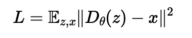
L2 Loss
Part 1.1: Implementing the UNet
I implemented the denoiser as a simple UNet, with a few downsampling and upsampling blocks with skip connections. Here is the architecture of the UNet I used:
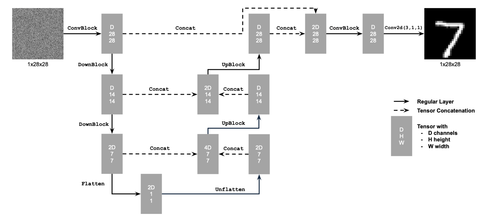
Unconditional UNet
The diagram uses some standard tensor operations, defined as follows:
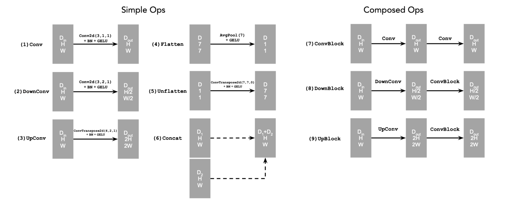
Standard UNet Operations
Part 1.2: Using the UNet to Train a Denoiser
To train the UNet denoiser, I generated noisy MNIST images by adding Gaussian noise with varying sigma values in [0, 0.2, 0.4, 0.6, 0.8, 1]. For each training batch, we can generate the noisy image z from x using the following noising process:
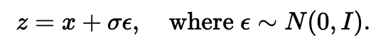
Noising Process
Here are a few samples visualized over all the noise levels:
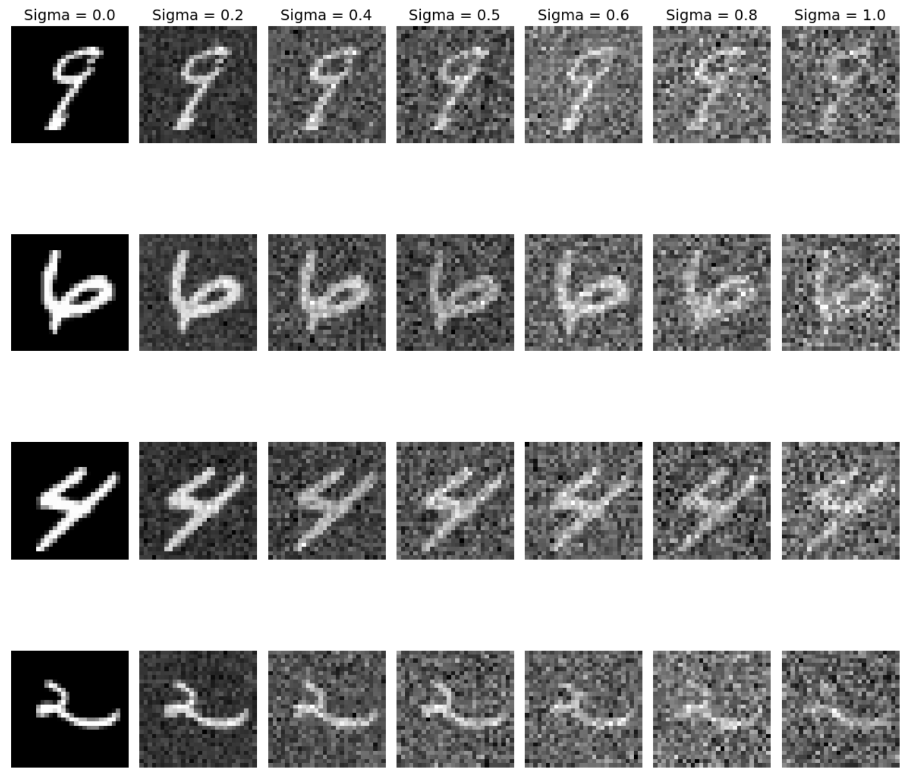
MNIST digits with varying noise
Part 1.2.1: Training
Now, I trained the model to perform denoising on the MNIST dataset. I used a noise level of sigma = 0.5 over 5 epochs, with a batch size of 256. I also used an Adam optimizer with a learning rate of 1e-4.
The training objective here was to minimize the L2 loss between the denoised outputs and the original clean images. Here are the results of my training:
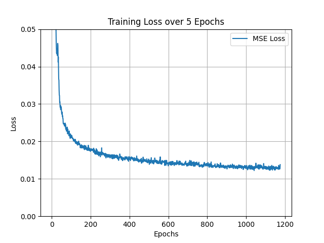
Training Loss Curve
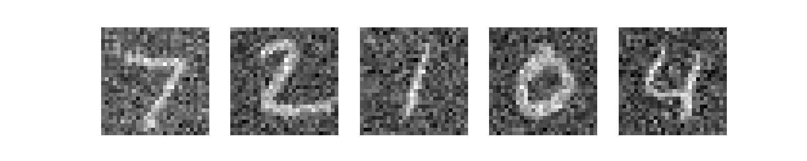
Noisy MNIST Images (sigma=0.5)
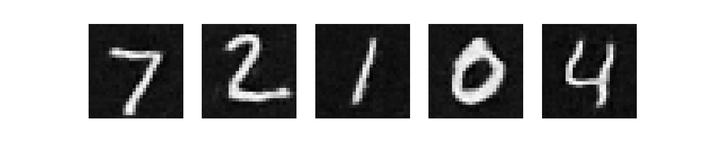
Outputs After First Epoch
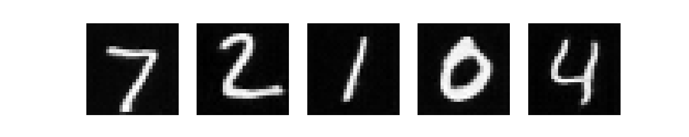
Outputs After Fifth Epoch
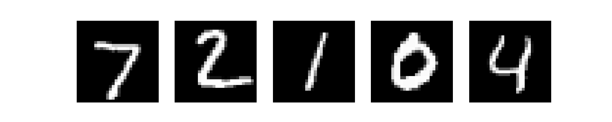
Original MNIST Images
Looks pretty good!
Part 1.2.2: Out-of-Distribution Testing
This denoiser was trained on a noise level of 0.5 only. Let's see how it performs on other noise levels that it hasn't seen during training.
For each image, the original noisy images are on the top, and the denoised outputs are on the bottom.
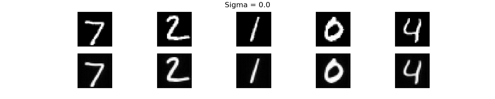
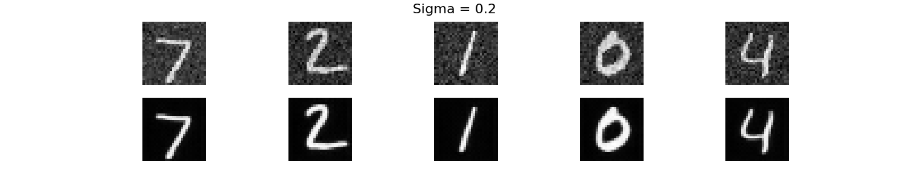
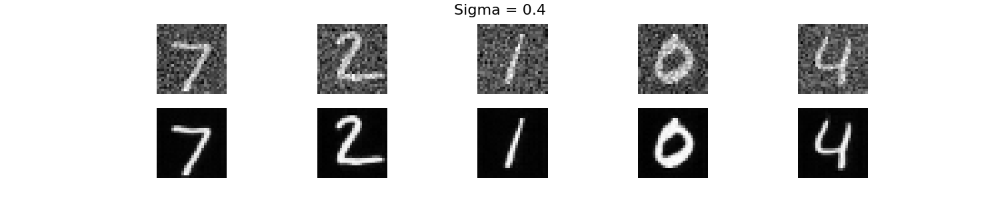
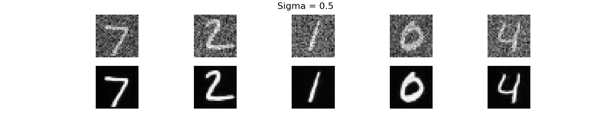
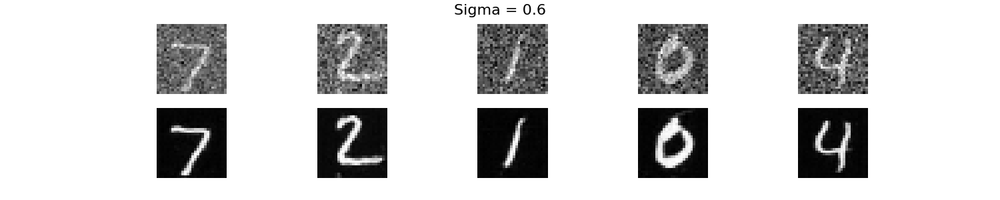
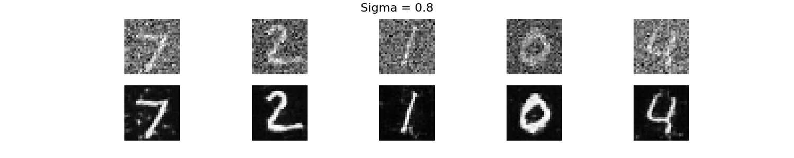
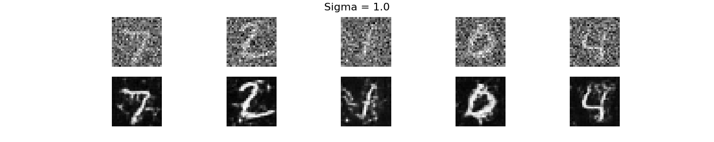
As we can see, the denoiser performs well on noise levels close to 0.5 or below, but struggles with very high noise levels. This is expected, since the model was only trained on a single noise level.
Part 1.2.3: Denoising Pure Noise
What happens if we just try to denoise pure, random Gaussian noise? I trained a model using the same process as part 1.2.1, except this time I used pure noise as input during training. I used the exact same model and training parameters as before.
Here's the training loss curve:
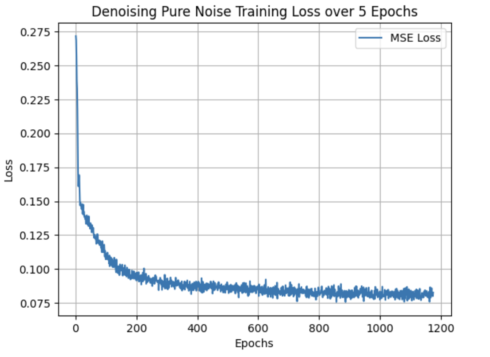
And here are the test inputs and the results after 1 and 5 epochs:
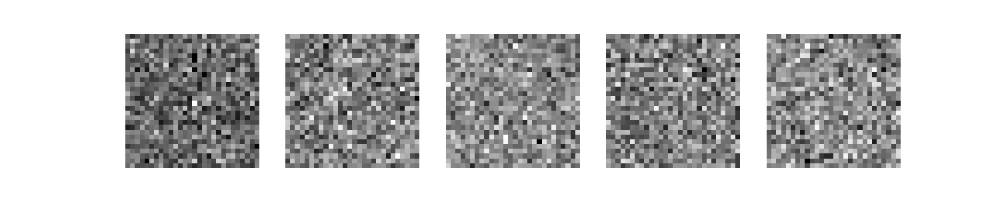
Pure Noise Test Input
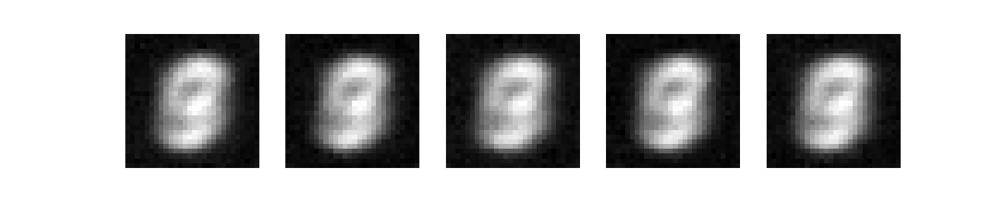
Sample Results after 1 Epoch
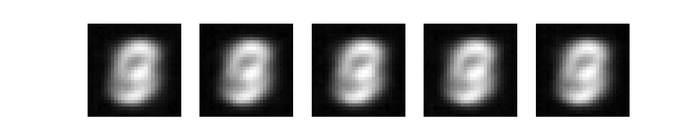
Sample Results after 5 Epochs
The model is attempting to perform image generation by denoising pure noise, but the results obviously don't look too great. A possible reason that the images look like this is that the model is denoising pure noise over a set of class labels (0-9), so the model is just learning the "average" of all the digits provided during training.
Part 2: Training a Flow Matching Model
Part 2.1: Adding Time Conditioning to UNet
I was able to inject a scalar t into my UNet model by adding two new operators to my architecture:

New Model Architecture
This uses a new operator called an FCBlock (fully connected block), which we use to inject the conditioning signal into the UNet:

FCBlock for Conditioning
Part 2.2: Training the UNet
To train, we essentially pick a random image x_1 from the training set, a random timestep t between 0 and 1, and add noise to generate x_t. Then, we optimize the MSE loss to train the denoiser to predict the flow at x_t.

Training Time-Conditioned UNet
We repeat this for different images until we are happy. I used the following parameters:
- Batch Size: 64
- Hidden Dimensions: 64
- Learning Rate: 1e-2
- Number of Epochs (num_epochs): 20
- Exponential Learning Rate Decay Scheduler: 0.1^(1/num_epochs)
Here is the training loss curve I obtained over the whole training process:
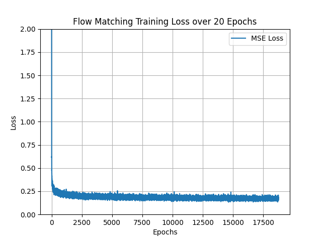
Flow Matching Training Loss Curve
The training loss converged to about .16.
Part 2.3: Sampling from the UNet
During training, we can now use our UNet for iterative denoising using the following algorithm:

Sampling Algorithm from Time-Conditioned UNet
The results aren't perfect, but we can see some legible digits emerge after 1, 5, and 10 epochs:
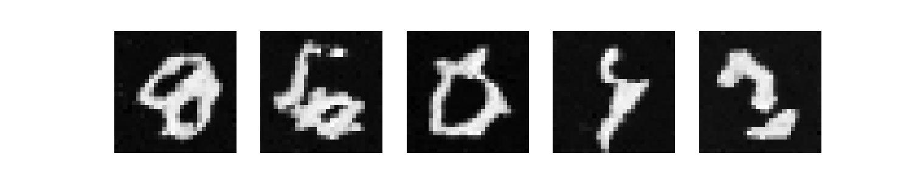
Sampling Results after 1 Epoch
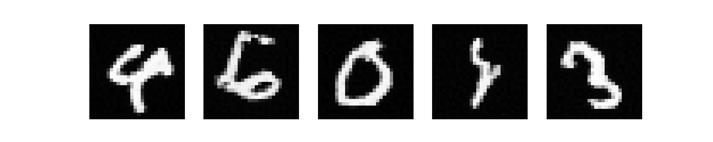
Sampling Results after 5 Epochs
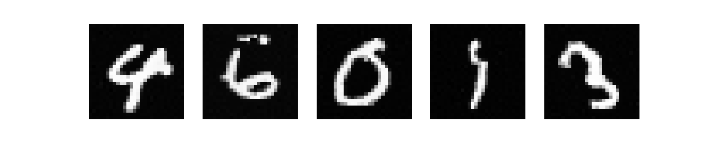
Sampling Results after 10 Epochs
Part 2.4: Adding Class-Conditioning to UNet
To make the results better and give us more control for image generation, I added class-conditioning to my UNet model based on the class of the digit (0-9). I implemented this by adding 2 more FCBlocsk to my layers to inject the class label information.
Instead of the class c being a single scalar, I converted c to a one-hot vector. I still want my UNet to work without it being conditioned on the class, so I implemented a dropout where 10% of the time I dropped the class conditioning vector c and set it to 0.
I applied the conditioning by modifying the following lines of my UNet architecture:
- unflatten = c1 * unflatten + t1
- upblock1 = c2 * upblock1 + t2
Part 2.5: Training the Class-Conditioned UNet
The training for this section was the same as the time-only training from part 2.2, except now we also provide the class label c for each image in the batch and apply class dropout with probability 0.1. Here's the algorithm I followed:

Training Class-Conditioned UNet
Here's the training loss curve I obtained over the whole training process:
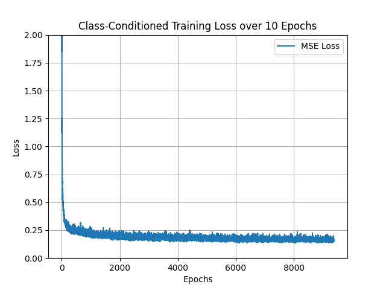
Class-Conditioned Training Loss Curve
Part 2.6: Sampling from the Class-Conditioned UNet
I sampled from the class-conditioned UNet over different epochs with a CFG scale of 5.0, using the following algorithm to sample:
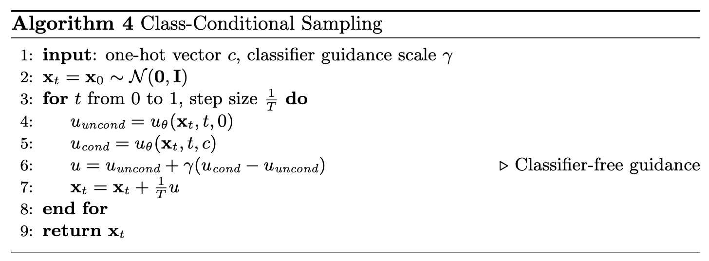
Sampling from Class-Conditioned UNet
Here are the sampling results after 1, 5, and 10 epochs for each digit class from 0 to 9:
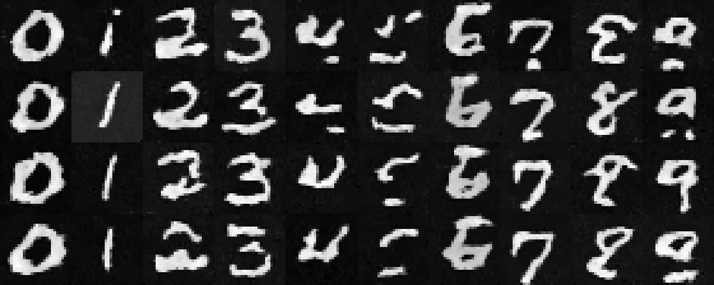
Sampling Results after 1 Epoch
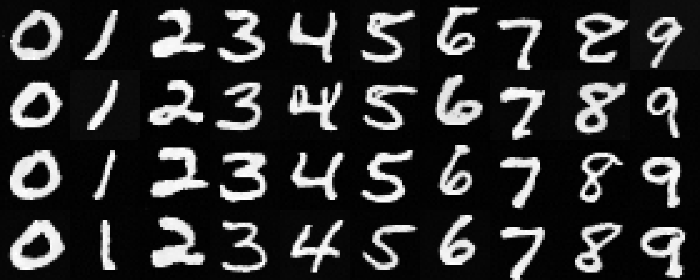
Sampling Results after 5 Epochs
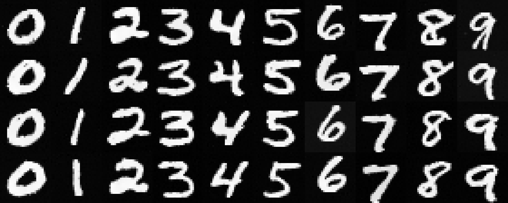
Sampling Results after 10 Epochs
After 10 epochs, the results look quite clean and distinct! These generated digits are much better than those generated by the time-only UNet.
I also experimented with training without the learning rate scheduler. To compensate for the loss of the scheduler, I used a slightly lower learning rate of 5e-3. Here is the same visualization after training the model without the scheduler across epochs:
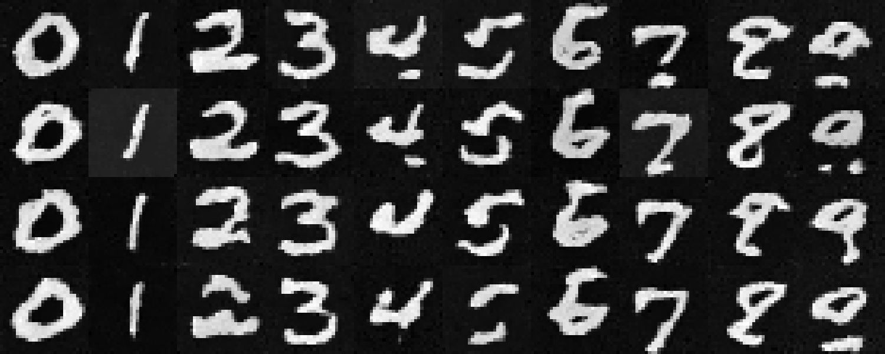
Sampling Results after 1 Epoch
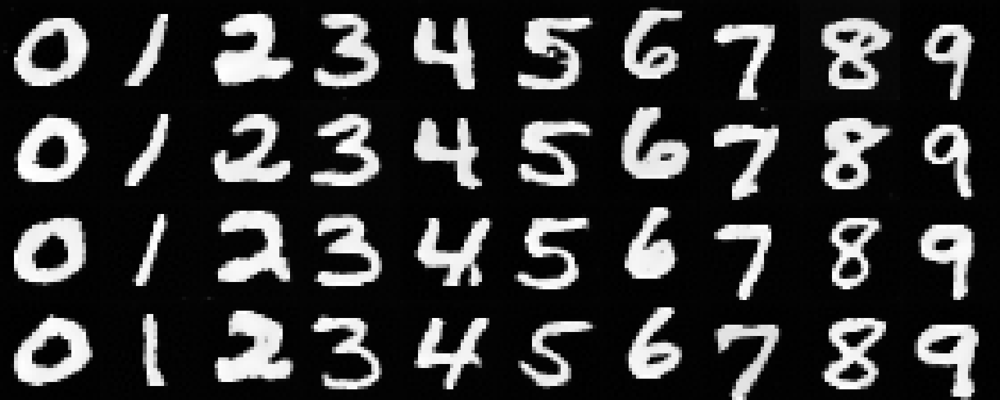
Sampling Results after 5 Epochs
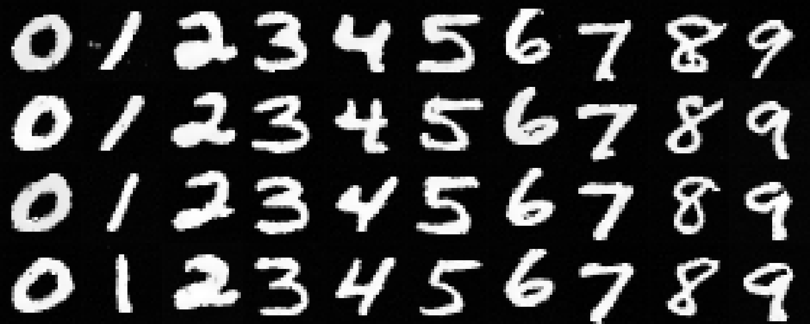
Sampling Results after 10 Epochs
The results are still quite good, showing that the model is able to learn the class-conditioned denoising task effectively.
As we can see from the results, the quality of the generated digits is quite good even without the scheduler.